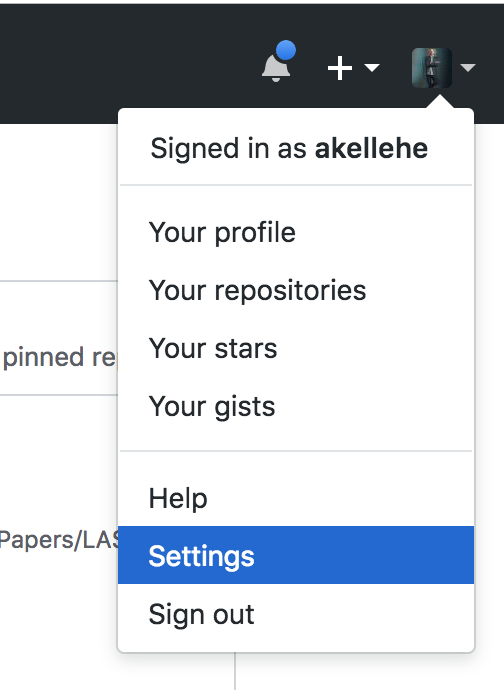
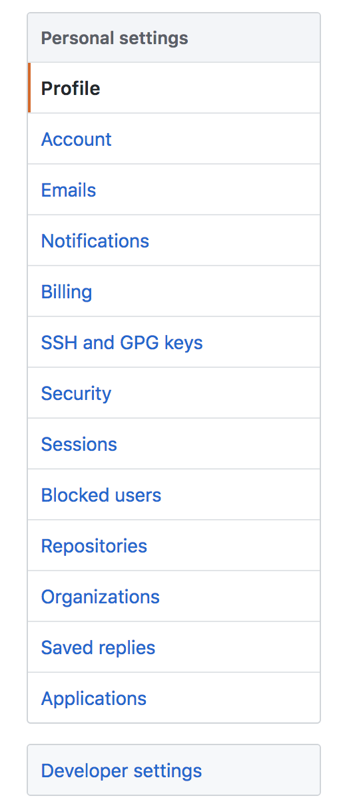
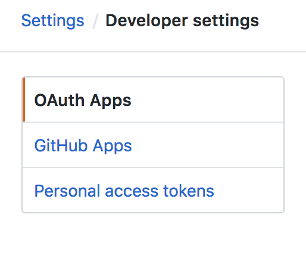
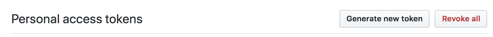
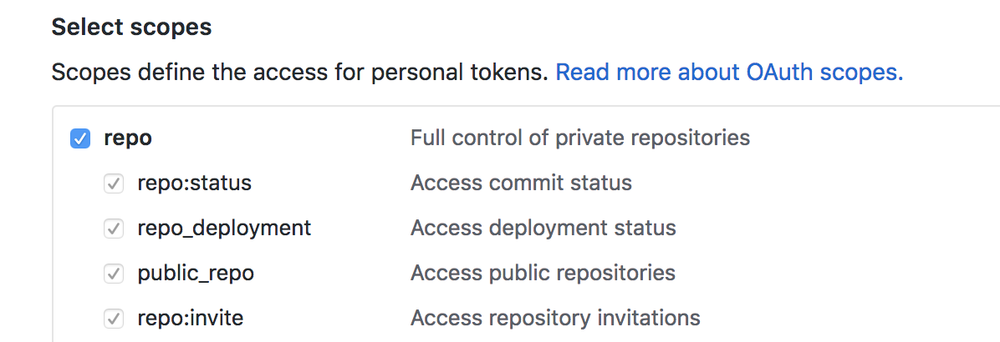
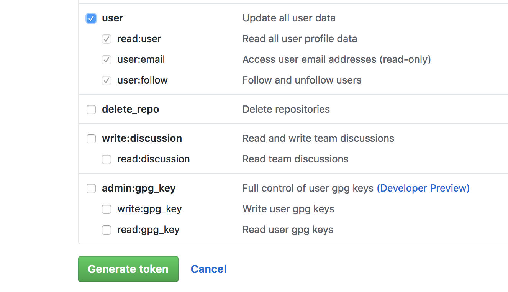

github_watcher¶
github_watcher watches for pull requests on repositories you specify. When it finds them, it checks them against directories, files, and lines in which you’re interested in keeping an eye out for changes. If something is changed, it will send you a desktop notification (Linux and OSX only).
This project is developed in Python3. You can install it with pip3 from the python package index:
pip3 install github_watcher
After that it will be added to your PATH. To get it configured and running on your machine you can either add your own configuration manually (details below) or you can run
github-watcher config
To run through a prompt. It will write a file at ~/.github-watcher.yml. Feel free to modify that file as your needs change.
Manual Configuration¶
~/.github-watcher.yml has a few components.
Adding a Project¶
---
<github username>:
<project name>:
<file name to watch>
- [<starting line in that file>, <ending line in that file>]
- [<another starting line in that file>, <another ending line in that file>]
For example, if I wanted to watch the source file for the lines you’re currently reading I would use:
---
akellehe:
github-watcher:
docs/source/index.rst
- [38, 40]
Now if someone submits a pull request against those lines, you’ll be notified.
Configuring Authentication¶
Clearly not every project will be accessible to the public, so you’ll need to add an access token. You can generate one on github pretty easily.
Go to the settings option in the profile tab in the upper right corner when you log in.
{kind=link}
Next, on the settings page click “Developer Settings” at the bottom of the menu on the left-hand side.
{kind=link}
On the Developer Settings page click on “Personal Access Tokens” at the bottom of the menu to the left of the page.
{kind=link}
Once you’ve opened the “Personal Access Tokens” page, click the button to the right labeled “Generate New Token”.
{kind=link}
That token needs to have “User” and “Repo” scopes for github_watcher to analyze all the pull requests.
{kind=link}
Once you’ve selected both “User” and “Repo” scopes, hit the green “Generate Token” button at the bottom of that menu.
{kind=link}
Your token will be listed on the next page. Copy it somewhere safe! This will be your only chance to record it. You will have to revoke and regenerate tokens from this point on.
Now that you have your access token, you have to add it to your ~/.github-watcher.yml file.
---
github_api_secret_token: '*****'
akellehe:
github-watcher:
docs/source/index.rst
- [38, 40]
You can record your access token in the place you see the asteriks above. After you’ve completed this step, if you’re using the publicly hosted github you’re done! If you’re using an enterprise build then you’ll have to add the api base url to the configuration.
---
github_api_secret_token: '*****'
github_api_base_url: 'https://github.example.com/api/v3'
akellehe:
github-watcher:
docs/source/index.rst
- [38, 40]
Then you can run it!
Running github_watcher¶
To set up github_watcher as a daemon, you can just run it like
github-watcher run
If something is going funky you can get verbose output like
github-watcher run --verbose
There are a bunch of other options you can pass. Get a complete listing by passing the “help” flag
github-watcher --help
For Developers¶
The Run Command Module¶
This module contains the business logic for the watch functionality. It interprets configurations and evaluates files against those configurations.
It also manages alerting on those files across Linux and Darwin systems.
-
github_watcher.commands.run.alert(file: str, range: Tuple[int, int], pr_link: str) → None[source]¶ Alerts that a file has been changed over range range. Also provides a link as supported by the target system.
Parameters: Returns: None
-
github_watcher.commands.run.are_watched_lines(watchpaths, filepath, start, end)[source]¶ Parameters: - watchpaths –
- filepath –
- start –
- end –
Returns:
-
github_watcher.commands.run.contains_watched_regex(conf: Dict, blob: str) → bool[source]¶ Searches a blob of text for a match to the regexes configured as the watched_regexes attribute of conf.
Parameters: Return type: Returns: True if blob contains one of the configured regexes.
-
github_watcher.commands.run.is_watched_directory(conf: Dict, user: str, repo: str, hunk_path: str) → bool[source]¶ Determines whether or not the file at user/repo/hunk_path is watched based on whether or not it lies in a directory specified by conf
Parameters: - conf (dict) – The configuration under which to assess the file.
- user (str) – The owner of the repository, repo, in which the file resides.
- repo (str) – The repo owned by owner, in which this file resides.
- hunk_path (str) – The relative path to the file to evaluate against conf in order to determine whether or not it is watched.
Returns: A boolean value specifying whether or not hunk_path is watched under conf.
-
github_watcher.commands.run.is_watched_file(conf: Dict, user: str, repo: str, hunk_path: str) → bool[source]¶ Determines whether or not the file at user/repo/hunk_path is watched based on the configuration passed as conf.
Parameters: - conf (dict) – The configuration under which to assess the file.
- user (str) – The owner of the repository, repo, in which the file resides.
- repo (str) – The repo owned by owner, in which this file resides.
- hunk_path (str) – The relative path to the file to evaluate against conf in order to determine whether or not it is watched.
Returns: A boolean value specifying whether or not hunk_path is watched under conf.